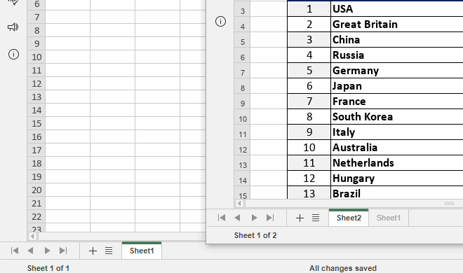
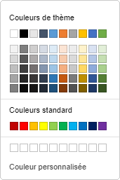
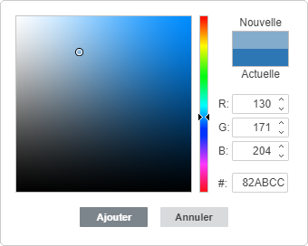
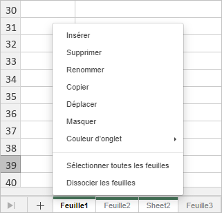

Gérer des feuilles de calcul
Par défaut, un classeur nouvellement créé contient une feuille de calcul. Le moyen le plus simple d'ajouter une feuille de calcul dans l'éditeur de classeurs est de cliquer sur le bouton Plus situé à droite des boutons de Navigation à travers des feuilles dans le coin inférieur gauche.
Une autre façon d'ajouter une nouvelle feuille est:
- Faites un clic droit sur l'onglet de feuille de calcul après laquelle vous souhaitez insérer une nouvelle feuille.
- Sélectionnez l'option Insérer depuis le menu contextuel.
Une nouvelle feuille de calcul sera insérée après la feuille sélectionnée.
Pour activer la feuille nécessaire, utilisez les onglets de la feuille dans le coin inférieur gauche de chaque feuille de calcul.
Pour trouver la feuille que vous cherchez si vous en avez beaucoup, utilisez les boutons de Navigation des feuilles situés dans le coin inférieur gauche.
Pour supprimer une feuille de calcul inutile:
- Faites un clic droit sur l'onglet de feuille de calcul à supprimer.
- Sélectionnez l'option Supprimer depuis le menu contextuel.
La feuille de calcul sélectionnée sera supprimée à partir du classeur actuel.
Pour renommer une feuille de calcul:
- Faites un double-clic sur sur l'onglet de feuille de calcul à renommer.
- Saisissez un nouveau nom et appuyez Entrée.
ou
- Passez à la feuille de calcul que vous souhaitez renommer.
- Passez à l'onglet Accueil, cliquez sur le bouton Format.
- Sélectionnez l'option Renommer la feuille de calcul option.
- Saisissez un nouveau nom et appuyez Entrée.
Le nom de la feuille de calcul sélectionnée sera modifiée.
Pour déplacer ou copier une feuille de calcul:
- Faites un clic droit sur l'onglet de feuille de calcul à déplacer.
- Sélectionnez Déplacer ou copier dans le menu contextuel.
- Sélectionnez la feuille de calcule utilisant la liste déroulante Feuille de calcul.
- Sélectionnez la feuille de calcul avant laquelle vous souhaitez insérer la feuille sélectionnée ou utilisez l'option Déplacer vers la fin pour placer la feuille sélectionnée après toutes les feuilles existantes.
Ou tout simplement faites glisser l'onglet de feuille de calcul et déposez-le là où vous voulez. La feuille de calcul sélectionnée sera déplacée.
- Activez l'option Créer une copie si vous souhaitez créer une copie la feuille que vous déplacez.
Vous pouvez également appuyer et maintenir la touche Ctrl et faites glisser l'onglet de classeur vers la droite pour dupliquer la feuille et déplacer la copie vers l'endroit nécessaire.
Vous pouvez aussi déplacer l'onglet de feuille par glisser-déposer vers une autre classeur. Pour ce faire, sélectionnez l'onglet à déplacer et faites le glisser vers la barre d'onglets de l'autre classeur. Par exemple, vous pouvez glisser-déposer une feuille de calcul de l'éditeur en ligne vers l'éditeur de bureau:

Dans ce cas la feuille de calcul est supprimée du classeur d'origine.
Actuellement, il n'est pas possible de glisser-déposer des feuilles de calcul vers un nouveau classeur dans l'éditeur de bureau sur Linux.
Pour masquer les feuilles de calcul dont vous n'avez pas besoin pour le moment:
- Faites un clic droit sur l'onglet de feuille de calcul à masquer.
- Sélectionnez l'option Masquer dans le menu contextuel.
ou
- Passez à l'onglet Accueil, cliquez sur le bouton Format.
- Sélectionnez l'option Masquer → Feuilles de calcul.
Pour afficher l'onglet de feuille de calcul masquée:
- Faites un clic droit sur un onglet.
- Accédez à liste Masquées et sélectionnez l'onglet de la feuille de calcul à afficher.
ou
- Passez à l'onglet Accueil, cliquez sur le bouton Format.
- Sélectionnez l'option Afficher → Feuilles de calcul masquées et sélectionnez l'onglet que vous souhaitez afficher.
Pour différencier les feuilles, vous pouvez affecter différentes couleurs aux onglets de la feuille. Pour ce faire:
- Faites un clic droit sur l'onglet de feuille de calcul à colorer.
- Sélectionnez l'option Couleur d'onglet dans le menu contextuel.
Vous pouvez également passer à l'onglet Accueil → cliquez sur le bouton Format → Couleur d'onglet.
- Sélectionnez une couleur dans les palettes disponibles :

- Couleurs de thème - les couleurs qui correspondent à la palette de couleurs sélectionnée de la feuille de calcul.
- Couleurs standard - le jeu de couleurs par défaut.
- Couleur personnalisée - choisissez cette option si il n'y a pas de couleur nécessaire dans les palettes disponibles. Sélectionnez la gamme de couleurs nécessaire en déplaçant le curseur vertical et définissez la couleur spécifique en faisant glisser le sélecteur de couleur dans le grand champ de couleur carré. Une fois que vous sélectionnez une couleur avec le sélecteur de couleur, les valeurs de couleur appropriées RGB et sRGB seront affichées dans les champs à droite. Vous pouvez également spécifier une couleur sur la base du modèle de couleur RGB en entrant les valeurs numériques nécessaires dans les champs R, G, B (rouge, vert, bleu) ou saisir le code hexadécimal dans le champ sRGB marqué par le signe #. La couleur sélectionnée apparaît dans la case de prévisualisation Nouveau. Si l'objet a déjà été rempli d'une couleur personnalisée, cette couleur sera affichée dans la case Actuel que vous puissiez comparer les couleurs originales et modifiées. Lorsque la couleur est spécifiée, cliquez sur le bouton Ajouter:

La couleur personnalisée sera appliquée à l'onglet sélectionné et sera ajoutée dans la palette Couleur personnalisée du menu.
Vous pouvez travailler simultanément sur plusieurs feuilles de calcul:
- Sélectionnez la première feuille à inclure dans le groupe.
- Appuyez et maintenez la touche Maj enfoncée pour choisir plusieurs feuilles adjacentes, ou utilisez la touche Ctrl pour choisir plusieurs feuilles de calcul non adjacentes à grouper.
- Faites un clic droit sur un des onglets de feuilles de calcul choisis pour ouvrir le menu contextuel.
- Choisissez l'option appropriées dans le menu:

- Insérer sert à insérer le même nombre de feuilles de calcul vierges que dans le groupe choisi.
- Supprimer sert à supprimer toutes les feuilles sélectionnées à la fois (il n'est pas possible de supprimer toutes les feuilles du classeur car un classeur doit contenir au moins une feuille visible).
- Renommer cette option ne s'applique qu'à chaque feuille individuelle.
- Déplacer et copier sert à déplacer toutes les feuilles sélectionnées à la fois et les coller à un endroit précis. ou à copier toutes les feuilles sélectionnées à la fois et les coller à un endroit précis.
- Masquer sert à masquer toutes les feuilles sélectionnées à la fois (il n'est pas possible de masquer toutes les feuilles du classeur car un classeur doit contenir au moins une feuille visible).
- Couleur d'onglet sert à affecter la même couleur à tous les onglets de feuilles à la fois.
- Sélectionner toutes les feuilles de calcul sert à sélectionner toutes les feuilles du classeur actuel.
- Dissocier les feuilles de calcul sert à dissocier les feuilles sélectionnées.
Il est également possible de dissocier les feuilles en faisant un double clic sur n'importe quel onglet de feuille du groupe ou en cliquant sur l'onglet de feuille qui ne fait pas partie du groupe.
Pour en savoir plus sur la protection des feuilles de calcul, veuillez consulter cet article.